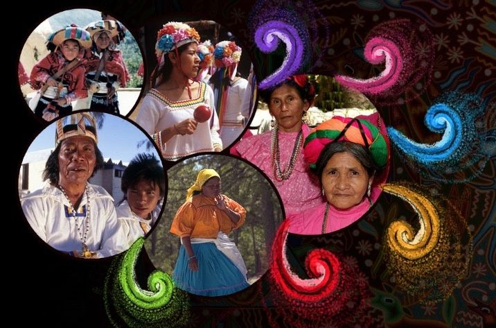

Lenguas Indígenas
7.4 millones de hablantes
» Náhuatl: 1.6 millones
» Maya: 774,000
» Tzeltal: 587,000
Fuente: INEGI 2020
Patrimonio UNESCO
35 bienes registrados
» 27 culturales
» 6 naturales
» 2 mixtos
Fuente: UNESCO 2023
Pueblos Originarios
25.7 millones de personas
» 21.5% de la población
» 68 agrupaciones lingüísticas
Fuente: CDI 2018